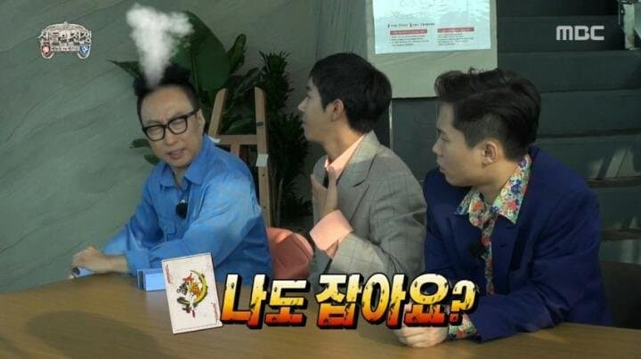
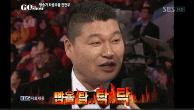
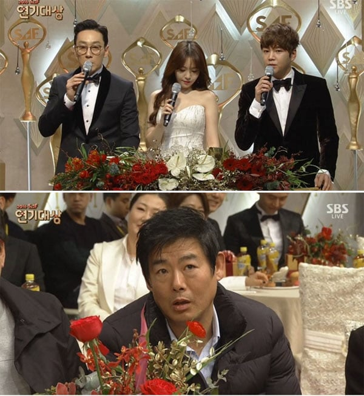

유재석을 진심으로 빡치게만든
광희 예능초보 시절

전현무가 뺨 툭툭쳐서 표정관리 안되는 강호동

이휘재의 무례에 순간 표정관리 안된 성동일
24년 차 후배놈의 조롱에 개빡친 탁재훈 + 바로의 예능은퇴

유재석을 진심으로 빡치게만든
광희 예능초보 시절

전현무가 뺨 툭툭쳐서 표정관리 안되는 강호동

이휘재의 무례에 순간 표정관리 안된 성동일
24년 차 후배놈의 조롱에 개빡친 탁재훈 + 바로의 예능은퇴
근데 저때 저걸로 욕 존나 먹고 저것때문인지 몰라도 서서히 방송 출연 줄어듦
전형적으로 재미 없는데 아이돌이라 예능 많이 나오는 캐릭터였어서 안 나오는 건 상관 없는데
고작 저걸로 무슨 존나 큰 죄라도 저지른 것처럼 욕하길래 당시에도 대중들 반응이 존나 기괴했음
탁재훈이 커뮤에서 호감이라 그런가봄
이휘재랑 ㄹㅇ 닮았는데 ㅋㅋ
평가가 극과극
쟤가다른데나와서했던 캐릭터자체가 다별로였어서 그런게 큰듯
B1A4 활동하다가 드라마 찍어서 혼자 빵떴는데 뜨고 나니까 그룹에서 탈퇴한다고 지랄 떨어서 결국 혼자 나가고
연기는 못하는데 배우병 걸렸다고 소문돌 정도로 행동 이상해서 뭔가 좀... 이러고 있는데 저거 터지고 이미지 나락간거라고 알려주네
1번은 기억남 무슨 대교에 등대같은건물에서 하는게임이엇는데
아무리 설명해도 광희가 쌉소리해서 ㅋㅋㅋ
노련한 박명수는 룰 이해 안되도 일단 묵묵히 시작 했다가 마지막에 트롤잼 ㅋㅋㅋ
조커!
3,4가 ㄹㅇ
1번은 뭔 상황임??
저게 설명 3번인가 4번 했는데 못알아들어서 그랬던걸로 기억하는데.... 나도 본지 오래되서 정확히는 모르겠네
찐표정 나오는 순간이 예능의 묘미지 ㅋㅋ
4번은단순히 놀리는거 말고 더 있엇음?
딸랑 저거 하나로 나락가고 예능에서 묻히는 그런정도는아닌거같은데